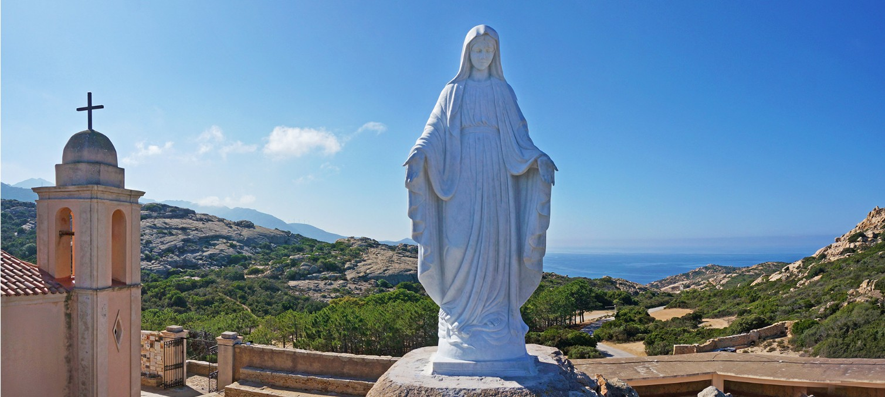

A hegycsúcson büszkén magasodó Notre-Dame de la Serra nem csupán egy építészeti emlék, hanem Calvi legfontosabb szakrális menedéke és zarándokhelye. A szentély bejáratánál álló, fenséges Madonna-szobor közvetlenül a város és a végtelen öböl felé néz, mintha fáradhatatlanul őrt állna a hullámok felett. A helyiek számára ez az alak a hit, a megbonthatatlan biztonság és a biztos hazatérés egyetemes szimbóluma, amely évszázadok óta különleges tiszteletnek örvend a viharokkal dacoló korzikai tengerészek és halászok világában.
A kápolna elszigetelt, misztikus környezetéhez egy mélyen gyökerező, romantikus népi hagyomány is kapcsolódik. A szigeten élő történetek szerint azok a szerelmespárok, akik felkapaszkodnak erre a magaslatra, és a védelmező Szűz Mária szobrának lábánál együtt imádkoznak vagy csendben megállnak, elnyerik a Madonna áldását, és szerelmük az élet viharai ellenére is örökké elszakíthatatlan marad. Ez a kedves legenda egyedülálló, intim atmoszférával ruházza fel a helyszínt, amely a rideg kőfalak és a monumentális sziklák között az emberi érzelmek melegségét hirdeti.
Vizuális szempontból a Notre-Dame de la Serra Calvi vidékének abszolút csúcspontja, ahonnan akadálytalan, 360 fokos panoráma nyílik a tájra. Innen fentről a történelmi citadella, a nyüzsgő kikötő és az egész íves öböl egyszerre hever a lábunk előtt, miközben a környező gránitsziklák lágy, rózsaszínes árnyalatai és a Földközi-tenger mély, hipnotikus kékje tökéletes színpompát alkotnak. A helyszín varázsa az alkonyat óráiban éri el a tetőpontját: ahogy a nap lassan a tengerbe bukik, a szakrális csendben izzani kezdenek a sziklák, és a citadella kigyúló fényei a természet és az emberi alkotás olyan kozmikus egységét teremtik meg, amely örökre beleég az utazó emlékezetébe.